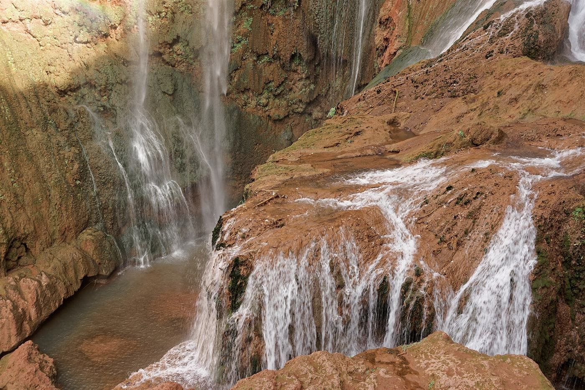

All shared group day trips from Marrakech
Every budget day trip we run from Marrakech, on one page — a medina walking tour, the Atlas Mountains, the stone desert, the Atlantic coast, waterfalls, and the UNESCO kasbah route. Shared small-group transport, fixed daily departures, from €15 per person.
Marrakech Medina Guided Walking Tour
- Jemaa el-Fnaa
- Spice & Dye Souks
- Bahia Palace
- Koutoubia Mosque
- Saadian Tombs
≈3 km walking route · no driving
No minivan, no long drive — just a local guide on foot and a small shared group exploring Marrakech's UNESCO-listed medina. This is our cheapest and shortest trip, ideal for your first morning in the city or a low-cost half-day between longer excursions.
The route winds from the chaos of Jemaa el-Fnaa square through the covered souks (spices, dyers, leather, lanterns), past the 19th-century Bahia Palace, the iconic Koutoubia Mosque minaret, and the beautifully restored Saadian Tombs.
Includes: shared local guide, all walking-route stops, hotel/riad meeting point. Not included: palace & tombs entrance fees (~€7 combined), lunch, tips.
From €15 per person Ourika Valley & Atlas Mountains Day Trip
- Marrakech
- Argan Co-op
- Berber Village
- Setti Fatma Waterfalls
- Marrakech
≈130 km round trip · about 3.5 hrs driving
The easiest budget day trip from Marrakech: a short hop into the High Atlas foothills for mountain air, Berber villages, and a waterfall hike, all in about 7 hours round trip including stops.
Stops include a women's argan oil cooperative, a scenic drive through terraced Berber villages along the Ourika river, and a guided walk toward the Setti Fatma waterfalls, with free time for lunch by the river.
Includes: shared minivan, English/French driver-guide, hotel/riad pickup. Not included: lunch, waterfall hike guide tip, travel insurance.
 From €29 per person
From €29 per person Agafay Desert Sunset Day Trip
- Marrakech
- Agafay Stone Desert
- Camel Ride
- Sunset Point
- Marrakech
≈75 km round trip · about 1.5 hrs driving
Desert views without the desert-length drive — the Agafay stone desert sits just 30–40 minutes from Marrakech, close enough for a camel ride and full golden-hour sunset in one afternoon, no overnight required.
A rocky, dune-like plateau with High Atlas backdrops, very different scenery from the Sahara dunes near Merzouga, and one of the best-value sunset experiences near the city.
Includes: shared minivan, driver-guide, camel ride, mint tea at sunset, hotel/riad pickup. Not included: desert-camp dinner (optional add-on), travel insurance.
 From €35 per person
From €35 per person Ouzoud Waterfalls Day Trip
- Marrakech
- Olive Groves
- Ouzoud Falls Hike
- Boat Ride
- Marrakech
≈300 km round trip · about 5 hrs driving
North Africa's tallest waterfall (100m+), reached via a scenic 2.5-hour drive through olive groves and Berber villages. A guided hike leads down through terraced olive trees to the base of the falls, where wild Barbary macaques are a regular sight.
An optional boat ride gets you right up to the base of the cascade for the classic photo, with free time to swim (seasonal) or relax at a riverside café before the hike back up.
Includes: shared minivan, driver-guide, guided hike, hotel/riad pickup. Not included: boat ride fee (small cash payment), lunch, travel insurance.

From €35 per personEssaouira Coastal Day Trip
- Marrakech
- Argan Forest
- Essaouira Medina & Port
- Marrakech
≈360 km round trip · about 5.5 hrs driving
Trade the medina heat for sea air in Marrakech's favorite coastal escape — a laid-back, UNESCO-listed fishing town with whitewashed ramparts and a noticeably cooler Atlantic breeze, roughly 2.5–3 hours each way.
A guided walk covers the medina's ramparts (the Skala), art galleries, and woodworking workshops, followed by free time at the fishing port for lunch (fresh grilled seafood is the local specialty) and shopping.
Includes: shared minivan, driver-guide, guided medina walk, hotel/riad pickup. Not included: lunch, optional gallery entrance fees, travel insurance.
 From €39 per person
From €39 per person Ait Benhaddou & Ouarzazate Day Trip
- Marrakech
- Tizi n'Tichka Pass
- Ait Benhaddou Kasbah
- Ouarzazate
- Marrakech
≈420 km round trip · about 7 hrs driving
Our longest day trip and one of Morocco's most iconic routes: cross the dramatic Tizi n'Tichka pass through the High Atlas to reach Ait Benhaddou, a UNESCO-listed fortified kasbah used as a filming location for Gladiator and Game of Thrones.
The route continues to nearby Ouarzazate, Morocco's "Hollywood of Africa," with an optional stop at the Atlas Film Studios. This route also doubles as day one of our 4-Day Sahara Desert Group Tour if you'd rather continue on to the dunes.
Includes: shared minivan, driver-guide, guided kasbah walk, hotel/riad pickup. Not included: lunch, film studios entrance ticket, travel insurance.
 From €39 per person
From €39 per person Marrakech Day Trip Questions
Are these shared or private tours?
All the trips above are shared, small-group departures — you'll travel with other budget travelers in the same minivan (or on foot, for the walking tour), which is what keeps prices low. Private versions are available on request for most routes.
How far in advance should I book?
Most day trips depart daily and can be booked a day ahead. The Agafay sunset trip and the Ait Benhaddou route are our most popular in high season (October–April) and are worth booking a few days early.
Can I book more than one day trip?
Yes — many travelers combine two or three, for example the walking tour on arrival day, then Ourika Valley or Agafay Desert later in their stay. Let us know your dates and we'll help plan a combination.
Is transport wheelchair or mobility accessible?
Our standard shared minivans aren't wheelchair-equipped. Contact us before booking so we can advise on the best option for your needs.
Prefer a multi-day route instead?
Browse our fixed-departure group tours across the Sahara, imperial cities, and the Atlas Mountains.